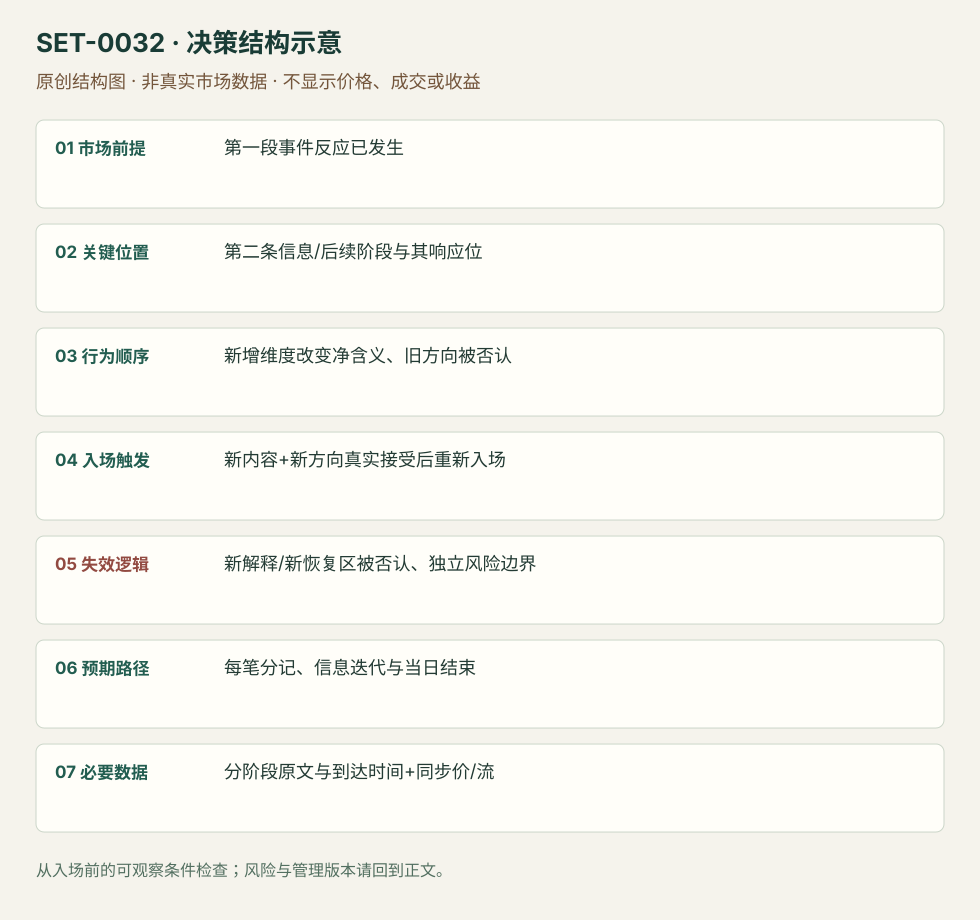

多阶段公告的净信息重新判断
Multi-part Announcement Reassessment · SET-0032 · reviewed · v1.0.0
盈利证据：not_established。审查范围与来源版本见第13节；未知字段保留缺失原因。
1. 名称与快速概览
第一条信息已引起价格反应，随后另一维度或记者会新增内容改变净含义；在观察到实际重新定价后重新建立方向。不是因亏损而临时把解释改到赢的一边。
记录口径：PA supporting；必要数据 official_release、news_sequence、prices、DOM。名称性质：编辑性描述名，英文保留来源术语以便检索。reviewed 只表示本条规则与证据记录审查通过，盈利状态为 not_established。
2. 本质与行为假说
规模、期限和条件共同决定政策作用。先前交易的依据可被随后信息否认，只有存下各信息到达顺序，才能检验重新判断是否前瞻。
3. 适用市场与环境
源例ECB同一公告的规模/期限与FOMC声明/记者会两阶段。限定可辨认新信息，纯价格来回波动、无新增内容不套本条。
来源实用市场：Bund/BTP期货（ECB）、债券/黄金/ES（FOMC）。
Session：事件当日，各信息阶段分别留时间戳；2019ECB原公告标CET记者会14:30，网页标签并不能替代夏令时转换核对。该日参考session结束前平仓。
跨市场：本版不主张已经验证的跨市场迁移；更换市场必须重定数据来源、流动性与session。
4. 出现前的观察清单
准备不同政策维度及其权重、第二阶段时间；记录首阶段方向、是否持仓和退出。官方文字版本只证明内容，终端何时显示与人何时读到仍要记录。
5. 形成过程与状态转换
第一段反应/初始计划 → 新信息改变总效果 → 原价格方向失去支持 → 新方向价格与相关市场确认 → 重新进入或翻转 → 复核继续到达的信息。
6. Entry trigger 与执行方式
来源在净含义改变且真实方向恢复后进入。编辑版要求第二阶段信息已可核实，价格越过该阶段恢复点；不能事后把每次价格拐点对应到一条新闻。先关闭原单再开新单，分别计损益。
7. Invalidation 与止损逻辑
新信息解释被随后内容否认或市场未接受新方向即退出；每次新仓另有结构/价格风险边界。不能用“信息复杂”拖延第一单止损，交易翻转也不能掩盖先亏。
8. Exit、target 与 trade management
重估推进后流衰退/已知目标处减仓；进一步公告将再改变净含义时先退出或缩小。日内版不持仓到第二天等政策影响。
9. 常见 variations
同份公告继续阅读与定时记者会是信息阶段版本；ECB、Fed不另计setup。只改文本解释但无新内容属于无效事后叙事。
10. 失败方式与不交易条件
遗漏条款、依赖错误终端转述；新方向未被接受；第一单亏损后报复翻转；停牌使理论翻转价不可成交；没有可靠到达序列。
11. 与相近 setups 的区别
12. 图表与案例解读
已看ECB价格图：起始低点、随后大反转与Bund Volatility Stop标记均可见。图无法给出阅读条款的毫秒时刻，不能用最低价假设翻转成交。
- [VIS-000034] ECB Sep 2019 BTP and Bund；定位：ECB September2019 BTP and Bund 1minute charts。先跌后急反转、Bund波动停顿被标出；提示不能假设连续成交。 验证：chart_viewed。

本地原创示意（VIS-000089，非真实市场数据）：

小屏阅读可打开原尺寸示意图并缩放。

此图用于对照识别顺序与风险定义；不计入真实案例覆盖率。
视觉材料元数据与查看范围
- VIS-000034 · real_source_chart / structure_and_trigger / chart_viewed
品种：BTP / Bund；日期：2019-09-12；周期：1分钟；时区：未知/不适用
时区未在图中核对；来源图表不是成交审计 - VIS-000089 · synthetic_structure_diagram / illustration_only / generated_not_market_evidence
品种：未知/不适用；日期：未知/不适用；周期：未知/不适用；时区：未知/不适用
无真实品种、日期或价格：这是结构示意
13. 证据、分歧与未知项
Axia给两个事件复盘，官方声明独立核对内容事实，未独立证明时间顺序、当时共识和收益。未观看记者会视频；FOMC终端图片只读到文字，不冒充音频或实时行情回放。
- [EVD-000062] Axia Futures，《How To Trade The ECB Decision – December 2020》，SRC-0045；定位：September2019: APP size versus duration。支持：首读月度APP规模失望下跌，继续读无结束日期导致反转；多维度信息不可只凭第一个数字。
- [EVD-000063] Axia Futures，《Trading the Fed Rate Decision》，SRC-0044；定位：statement versus Powell conference: taper mid2022。支持：声明阶段初始空单价格不支持；记者会新信息改变解释，跨市场反应才支持后续方向。
- [EVD-000064] ECB，《Monetary policy decisions — 12 September 2019》，SRC-0085；定位：公告第(2)项及记者会时间。支持：APP每月200亿、从11月起并按需要持续；核对规模与条件期限，非价格因果或成交审计。
- [EVD-000065] Federal Reserve Board，《Federal Reserve issues FOMC statement》，SRC-0084；定位：For release 2pm EDT / pace moderation wording。支持：核对2021-09-22声明14:00EDT和购债放慢表述，不代表记者会措辞已看视频。
审查边界：来源份数与独立核心核验分开；当前类别为 independent_event_facts_only。正文中的概念、官方事实、衍生解说或同族资料只按其支持范围使用。
14. 可用于复盘的检查表
- ☐ 下单前的前提可核对：第一段事件反应已发生
- ☐ 事前标记位置：第二条信息/后续阶段与其响应位
- ☐ 行为按顺序出现：新增维度改变净含义、旧方向被否认
- ☐ 实际触发符合选定版本：新内容+新方向真实接受后重新入场
- ☐ 事先写明本次否定条件：新解释/新恢复区被否认、独立风险边界
- ☐ 目标/路径只用当时已知信息：每笔分记、信息迭代与当日结束
- ☐ 数据满足 分阶段原文与到达时间+同步价/流；记录时间、点差、滑点、队列和未成交
- ☐ 记录截止平仓及规则偏离；正常亏损不事后改成“未成立”
15. 后续验证问题
政策维度权重是否能事前写出？新信息和纯情绪回抽怎样分辨？第一段止损是否独立于预计第二阶段？
双向相关导航
- SET-0031 事前预案中的宏观意外与跨市场确认 0032 已有第一段价格反应，后续信息改变净含义才重新判断。
- SET-0014 趋势第一次反向冲击后的首回撤 0014 可仅由价格冲击后弱回调触发；本条必须可核对新增信息。